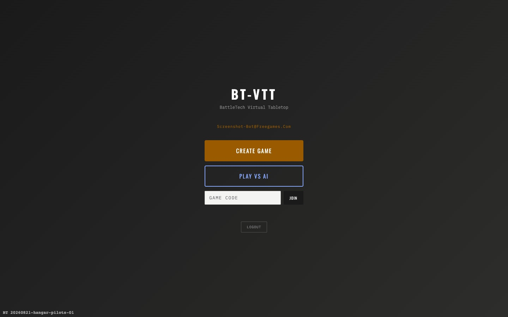
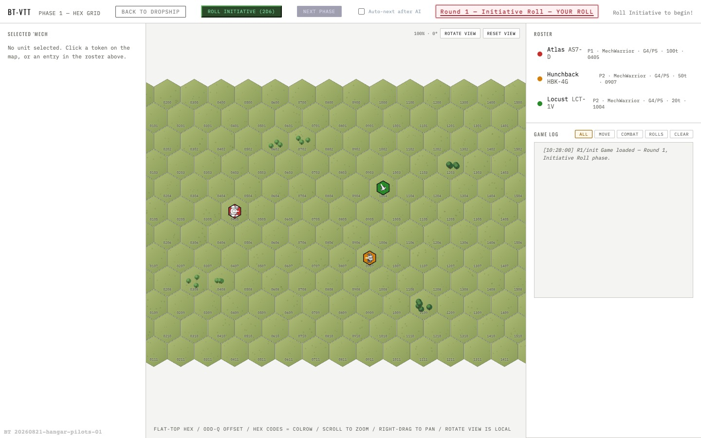
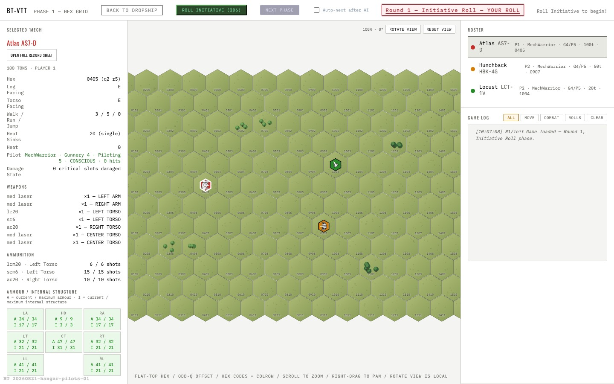
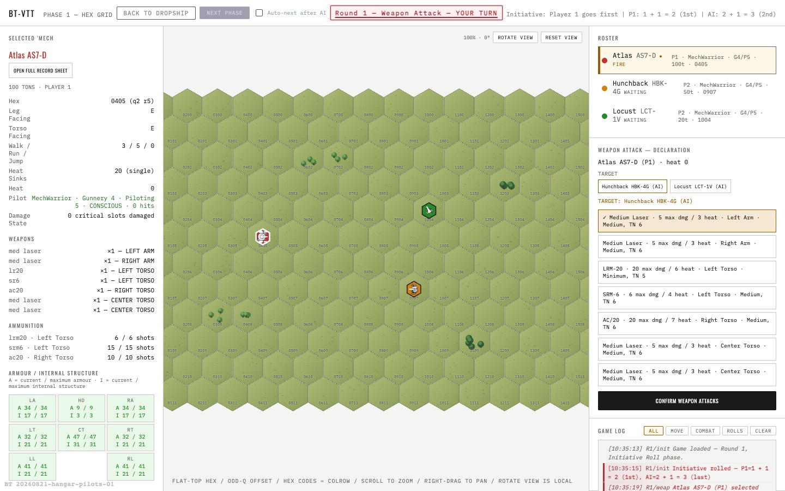

Quick-start field guide
Play a BattleTech match with a friend.
BT-VTT is a browser tabletop for two players. Create a match, send its code to your opponent, choose your BattleMechs, then alternate movement and fire through each turn.
01 · Human vs human
Start a match in a minute
- Sign in or create an account. Your games are attached to your account, so you can return to a lobby or active match.
- Choose a route from the Dropship. Open Scenarios for one of three ready-to-play deployments, or choose Create Custom Skirmish to select a battlefield, tonnage and victory condition. Play vs AI starts a solo battle.
- Share the game code. Copy it from the lobby and send it to your opponent. They choose Join on the main menu and enter the code.
- Build and deploy your rosters. Each player selects BattleMechs within the match tonnage, places them in the deployment zone, and chooses their starting facings. Units in legal concealing terrain may begin hidden. Each side may also place its allotted conventional or vibrabomb minefields inside its own deployment zone, choosing density and vibrabomb weight sensitivity; the opponent cannot see them until detected or triggered. If the force carries C3 or C3i, declare its networks in the C3 Network Assignment panel. When both players are ready, the host starts the game.
Career identity: choose Start Career to create or update the persistent commander avatar stored with your account. This identity is the foundation for the future persistent company, hangar, pilot, repair and contract systems.
Want your own variant? Open Editors, then MechLab, from the Dropship—or use the lobby Hangar. Choose an Inner Sphere or Clan chassis, movement profile and construction equipment, allocate armour, then add supported weapons, ammunition and electronics. Targeting Computers are sized automatically from eligible direct-fire weapon tonnage; Guardian or Clan ECM, Active Probes, standard C3 and C3i use their correct technology, mass and critical slots. XL engines, Endo Steel and Ferro-Fibrous armour save mass but consume critical slots. The construction report checks the technology base, engine weight, total tonnage, heat, armour limits and critical slots as you work. Saving publishes an immutable revision: choose “Use as new revision” if you later want to alter it, so BattleMechs already used by a match never change underneath the players.
Want your own battlefield? Open Editors, then Map & Scenario Editor. Paint terrain and elevation on the hex grid, mark both deployment zones and any objectives, choose a victory condition, then create the normal two-player lobby.
02 · The battlefield
Read the hex map
The map uses flat-top hexes. Each hex has a four-digit coordinate in the game log, such as 0304. Click a unit token or roster entry to open its record sheet.
Clear ground
Costs 1 movement point to enter.
Light woods
Costs 2 movement points and makes attacks harder.
Heavy woods
Costs 3 movement points and provides stronger cover.
Industrial terrain
Buildings block movement and sight; smoke and fire obscure shots.
Industrial Crossing adds pavement, rubble, shallow and deep water, buildings, fire, and light or heavy smoke. Three obscuration points between units block a shot. A fully submerged BattleMech cannot make or receive ordinary weapon attacks.
Running after turning on pavement risks a skid. A failed control roll makes the ’Mech fall, slide in its original direction, take extra damage, and possibly collide with a unit or building. Buildings track Construction Factor (CF); a destroyed building collapses into rubble. Fire damages adjacent buildings at the end of each round and creates a heavy-to-light smoke trail in the prevailing wind direction.
Use the map controls to zoom, pan, or rotate your own view. Those controls do not change the match for the other player.
Create Custom Skirmish and the Map & Scenario Editor offer Annihilation, Objective Control, or Breakthrough. Objective Control awards one point per uncontested marked hex at the end of each round; the first player to five wins. Breakthrough awards each BattleMech once when it ends a round inside the opponent’s deployment zone; the first player to move two BattleMechs through wins. Destroying the entire opposing force still ends every scenario immediately.
03 · Every turn
Initiative, movement, then attacks
During alternating phases, wait for the highlighted player to act. The status readout and game log show whose activation is next.
04 · Movement
Choose a mode, then commit the route
| Mode | What it does | Attack modifier |
|---|---|---|
| Stand | Remain in place. | +0 |
| Walk | Use walking MP; may move backwards. | +1 |
| Run | Use running MP; cannot move backwards. | +2 |
| MASC Run | If fitted and operational, double current Walking MP and make an escalating activation roll. | +2 |
| Jump | Use jumping MP; ignore terrain in transit and choose a landing facing. | +3 |
- Turning costs 1 MP per hexside; turning around costs 3 MP.
- Woods, rough ground, rubble, water and climbing levels cost additional MP. Entering water or rubble may require a Piloting roll; running units cannot enter water. A standing BattleMech in shallow water has partial cover: +1 to hit it, and leg hits strike the water.
- Buildings are solid and impassable. Turning while running on pavement requires a Piloting roll. Moving through fire adds heat, and ending Movement in a burning hex adds further heat during Heat Management.
- You cannot end in an occupied hex. Ground movement also cannot pass through an enemy unit.
- A hidden BattleMech is revealed when it moves, fires, is approached to an adjacent hex, or is found by an active probe with line of sight. Attempting to enter its hex stops the moving BattleMech in the preceding hex and reveals the contact.
- Ground movement checks every entered hex for enemy conventional and vibrabomb minefields. A triggered minefield attacks in 5-point groups against the legs and then loses density. An active probe checks for concealed minefields at the end of Movement.
- MASC requires 3+, 5+, 7+, 11+, then 13+ as its risk rises with repeated use. A full turn without MASC lowers the next roll by two steps on that table; each further unused turn lowers it another step, to a minimum of 3+. Failure causes one random critical hit in each leg followed by an immediate Piloting roll.
- Once you choose a mode for a unit, it is locked for that activation. Check the movement preview before confirming.
05 · Weapon attacks
Make every shot count
After all units have moved, choose a target and weapons from the selected unit’s panel. A legal shot needs line of sight, range, and a valid firing arc. The interface shows the target number before you commit.
Roll 2D6. Meet or beat the target number to hit. Short range adds no modifier, medium adds +2, and long adds +4. A target number above 12 automatically misses.
Line of sight and cover: sight is traced between the two BattleMechs at their actual elevations. Standing units are two levels high and prone units one. Hills and buildings block sight when they reach the sight line; woods and smoke only add their modifier when they are high enough to intervene. Three intervening points block sight. A standing target immediately behind terrain one level higher than its hex has partial cover (+1 to hit and leg hits strike the cover), unless the attacker is looking down from above. Depth-one water provides the same protection. Woods in the covering hex can still add their normal modifier, but woods alone do not create partial cover.
You may split a BattleMech’s weapons between several enemies. Assign weapons to each target, then mark exactly one as primary. Secondary targets in the forward arc add +1 to hit; secondary targets in a side or rear arc add +2. If any chosen target is in the forward arc, the primary target must also be there.
Before the first Initiative roll, ammunition bins that support a choice must be loaded. LB-X autocannons choose slug or cluster. Standard SRMs choose standard, Inferno, or fragmentation rounds; Infernos cause heat instead of normal damage, while fragmentation rounds do not harm BattleMechs. Standard autocannons choose standard, Precision, armour-piercing, or flechette rounds. Precision reduces the target movement modifier; armour-piercing adds +1 to hit but can cause a critical effect through intact armour; both use half-capacity bins. Flechette damage is halved against BattleMechs. Standard LRMs may carry fragmentation or semi-guided rounds. MML bins choose either LRM or SRM ammunition for the battle: LRM mode uses long-range missile ranges, grouping and indirect fire; SRM mode uses short-range missile ranges and two-point missile hits. After a successful TAG designation, semi-guided direct fire ignores target movement and semi-guided indirect fire also ignores the indirect, spotter-movement and intervening-terrain modifiers.
Specialist weapons: MRMs resolve on the cluster table and add +1 to hit. Snub-Nose PPCs cause 10 damage at short range, 8 at medium range and 5 at long range. Flamers add heat to a BattleMech they hit. Plasma rifles add 1D6 heat and plasma cannons add 2D6 heat, in addition to the weapon profile’s normal resolved effects. A weapon marked as rear-mounted fires only through the three-hex rear arc.
If an LRM-equipped attacker cannot see its target, select Indirect Fire and nominate a friendly unit that can see it. The spotter's movement and terrain apply, and both attacks become harder if the spotter also fires. A prone BattleMech needs both arms intact: choose one as its supporting arm, then fire only torso, head and opposite-arm weapons.
An operational Anti-Missile System automatically engages one successful missile flight per AMS mount each round, using one ammunition round and adding one heat. It reduces the missile cluster roll; against a single Narc missile it instead has a 50% chance to destroy the incoming beacon.
Targeting support: an operational Targeting Computer gives eligible direct-fire energy and ballistic weapons −1 to hit. Instead, its weapon may aim at a non-head location at +3; after the attack hits, a separate location roll of 6–8 strikes the chosen location. Pulse weapons, rapid fire and LB-X cluster fire cannot aim.
Electronic warfare: declare each network in the lobby before readying. A standard C3 network has one root Master; each Master may control up to three Masters or up to three Slaves, but never a mixture. A C3i network contains up to six peers and does not use a Master. Connected units use the closest linked friendly unit with line of sight to determine the range bracket, but never extend maximum range or remove the firing unit’s minimum-range penalty. Destroying or jamming a standard C3 Master disconnects the branch below it; C3i loses only the affected peer. Hostile ECM within six hexes, or crossing the electronic link, cuts C3 and suppresses Artemis IV and Narc guidance. At the end of Movement, a Beagle Active Probe reveals hidden units within four hexes and a Clan Active Probe within five when line of sight exists; probes also roll to detect nearby minefields. Hostile ECM suppresses these probe checks.
06 · Damage, heat, and winning
What happens after a hit
A successful attack rolls a hit location. Damage removes armour first, then internal structure; overflow transfers inward according to the unit’s damage diagram. Losing a head or centre torso destroys the BattleMech. Losing one leg forces a fall and leaves only very limited movement; losing both prevents movement, though the unit can still fire while prone.
Internal damage can destroy weapons, ammunition, heat sinks, gyros and limb actuators. The game automatically applies movement reductions and any required Piloting rolls. A BattleMech that falls changes facing, takes grouped falling damage, and may injure its pilot.
Weapons and movement can generate heat. In the Heat phase, each BattleMech dissipates heat according to its surviving heat sinks; engine hits add heat, high heat can cause shutdown or ammunition explosions, and destroyed life support can injure the pilot. Keep an eye on the record sheet rather than treating every weapon as a free shot.
Every match ends immediately when only one force survives. Objective Control and Breakthrough matches can also end after round scoring reaches the scenario threshold. The game resolves victory after the appropriate phase so simultaneous fire is handled fairly.
At the end of a battle, the shared Battle Report opens automatically. It shows both forces’ damage, accuracy, criticals, surviving units, recorded Heat Levels, standout shots, and a 2D6 distribution. Its expectation comparison uses each attack’s target number, so it does not mistake a high average roll for better luck. The complete saved battle log remains available in the report.
07 · Interface tour
Where to find what you need




Local game settings: use the cog in the match header to choose the Combat Log Speed, adjust weapon sound-effect volume, or mute effects. The server still resolves simultaneous fire immediately and fairly; these controls change only how this browser presents each BattleMech's saved results.